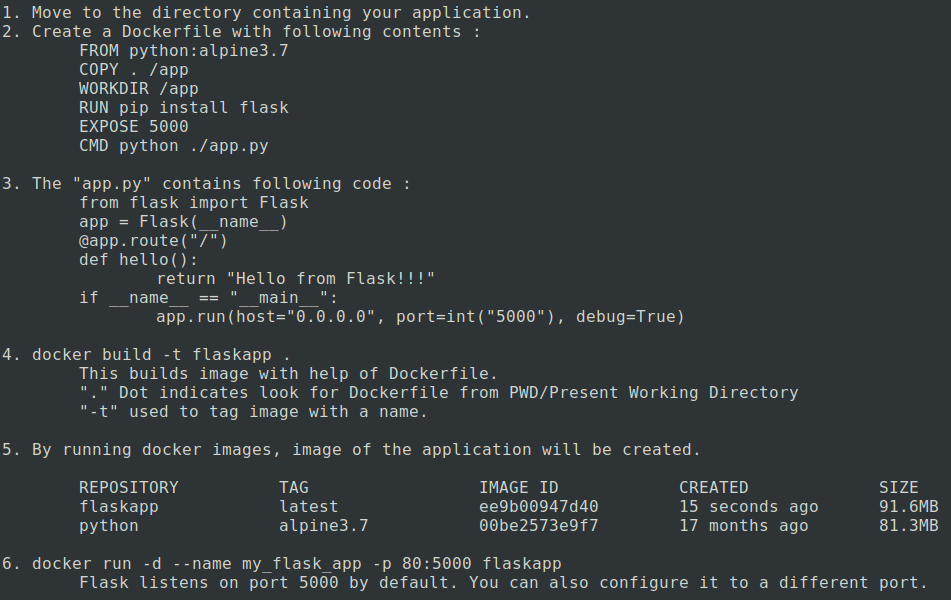
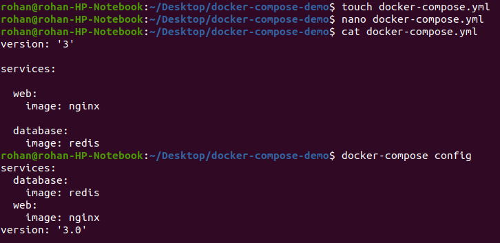
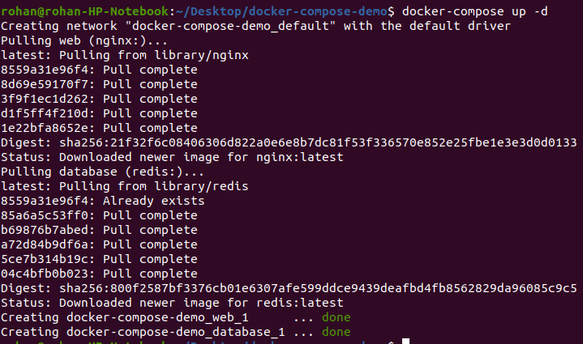

Docker History
So , what happened before docker ?
A developer sends code to a tester but it doesn’t run on the tester’s system due to
various dependency issues, however it works fine on the developer’s end.
But what docker has provided with ?
As the tester and developer now have the same system running on Docker
container, they both are able to run the application in the Docker environment
without having to face differences in dependencies issue as before.
So,
Docker is a software development tool and a virtualization technology that makes it easy
to develop, deploy, and manage applications by using containers.
Container refers to a lightweight, stand-alone, executable package of a piece of software
that
contains all the libraries, configuration files, dependencies, and other necessary parts
to operate the application. They are the running instances of docker images.
Example : Ubuntu + Python + Dependencies
So, what is difference between VM's and Containers ?
Docker Architecture
The server is the physical server that is used to host multiple virtual machines. So this layer remains the same.
The Host OS is the base machine such as Linux or Windows. So this layer remains
the same.
Now comes the new generation which is the Docker engine. This is used to run the operating system which earlier used to be virtual machines as Docker containers.
All of the Apps now run as Docker containers.
The clear advantage in this architecture is that you don’t need to have extra hardware for Guest OS.
Everything works as Docker containers.
Installing Docker On Ubuntu
Follow the below steps to install and configure docker if You use Ubuntu.
Now, Run the below command to verify.

Containers and Images - Concepts
Docker Images
Docker image can be compared to a template that is used to
create Docker containers. These are
read-only templates that contains application
binaries and dependencies. Docker images are stored in the Docker Registry.
Docker Containers
Docker container is a running instance of a Docker image as
they hold the entire package needed to run the application.
We can run any number of containers based out of an image and Docker makes
sure that each container created has a unique name in the namespace.
Docker image is a read-only template. Changes made in containers won’t be
saved to the image by default
Containers run each service with its own dependencies in separate containers
Docker Registry
Docker registry is a storage and distribution system for Docker images.
It is organized into Docker repositories , where a repository holds all the versions
of a specific image.
By default, the Docker engine interacts with DockerHub , Docker's public
registry instance.
However, it is possible to run on-premise private repositories
https://hub.docker.com/

Docker Basic Commands
Dockerfile
What is a Dockerfile ?
• Dockerfile is essentially the build instructions to build your image
• It is a text document that contains all the commands a user could call on the
command line to assemble the image
• Using
docker build users can create an automated build that executes several
command-line instructions in succession
• Name of file is Dockerfile without any extensions.
Dockerfile contents
Demo on Dockerfile
Here, we will deploy our python application using Dockerfile.
This is my directory structure that has a Dockerfile and an "app.py" that contains my application.
Following are the steps used to build an application with Dockerfile.

Open your web browser and see the application deployed.
Docker Networking
Docker gives 3 default networks: bridge, none and host
When you start Docker, a default bridge network (also called bridge) is
created automatically,
and newly-started containers connect to it unless
otherwise specified.
We can see details of a particular network using command :
docker network inspect (name_of_Network)
Docker Networking : Bridge
In Bridge network, all containers get private internal IPs
and they are isolated from host.
Understanding DNS Resolution in Bridge Network
• When containers are run in default bridge network they cannot find
each other using their
container names.
• Simply put, DNS resolution through container names will not work
under default bridge network
In the below example, 2 containers are created under the default bridge network
Note that ping to second container from the first container using the second container’s name didn’t resolve(DNS server is not
available under default bridge network)
Run the following :
docker run -itd --name c1 ubuntu
docker run -itd --name c2 ubuntu
docker attach c1
To Install ping in Ubuntu:
apt-get install iputils-ping
Now a new bridge network is created and containers are attached to
that network using --net flag
In this case, containers find each other using their container
names(DNS resolution through container names)
Now when we try ping, it transfers packets.

Docker Networking: Host
• In host network, all containers directly get connected to
host.
• Multiple containers cannot run on same hosts because of
port conflicts on host side
Docker Networking: None
• This offers a container-specific network stack that lacks a
network interface.
• Containers run in pure isolation
• This container only has a local loopback interface (i.e., no
external network interface)
Docker Networking: Overlay
Bridge networks apply to containers running on the same Docker daemon
host. For communication among containers running on different Docker
daemon hosts, we should use an overlay network which spans across the
entire cluster
Docker Volumes
Data Volume is a directory or file in the container, mounted to a directory on your host.
The data volume has its own address space on the Docker host’s local storage area.
In this diagram, a data volume is located at the directory /data on the Docker host is mounted into two containers.
Data volumes can be shared and reused among containers, as you can mount several data volumes into a container.
Advantages:
1. To keep data around when a container is removed
2. To share data between the host filesystem
and the Docker container
Working with Docker Volumes
Create and list Volumes
Mountpoint refers where the data volume is available.
How to Use This Volume ?
Start a jenkins container on port 8080 and attach the colume created to the container.
Run the following command :
docker run --name MyJenkins -v myvolume1:/var/jenkins_home -p 8080:8080 -p 50000:50000 jenkins
Copy the key and perform required steps to start using jenkins.
Create a test job in jenkins dashboard.
Now, start another jenkins container on port 9090 by attaching your volume to it.
docker run --name MyJenkins2 -v myvolume1:/var/jenkins_home -p 9090:8080 -p 60000:50000 jenkins
Now afer running the command, it justs asks to login with your id and password.
And after login data is shared between 2 jenkins containers running on different ports.
Using Bind Mounts
Bind mounts : It is a file or directory on the host machine mounted into a container which means we can use a
physical location on our machine rather than using volumes.
Run the command
docker run --name MyJenkins3 -v /home/rohan/Desktop/Jenkins_Home:/var/jenkins_home -p 9191:8080 -p 40000:50000 jenkins
Some data will be fetched in your directory "/home/rohan/Desktop/Jenkins_Home"
Now run the following commands to stop and remove all containers.
docker stop $(docker ps -aq)
docker rm $(docker ps -aq)
Run the command
docker volume ls
You will still find your volume and can use this to create different containers and share data with other container with same set of jenkins jobs and plugins.
Remove volume
docker volume rm myvolume1
Docker Compose
What is Docker Compose ?
Docker Compose is used to run multiple containers as a single service.
For example, an application requires both web server and a database containers, you could
create one file which would start both the containers as a service(docker compose) or
start each one separately(docker run)
All services are to be defined in YAML format
Example :
Step 1
Make sure docker-compose is installed .
To verify, run either of commands:
docker-compose -v
docker-compose version
docker-compose --versionv
Step 2
Creating a docker compose file at any location in your system with name "docker-compose.yml" and checking validity of file by command
docker-compose config

Step 3
Run the file to create containers:
docker-compose up -d

Step 4
Expose servers on required ports.
Step 5
To Scale services if required using "--scale" flag.
Docker swarm
What is Container Orchestration ?
Container orchestration is all about managing the lifecycles of containers, especially in large, dynamic
environments.
✓ Provisioning and deployment of containers
✓ Scaling up or removing containers to spread application load evenly across host infrastructure
✓ Movement of containers from one host to another if there is a shortage of resources in a host, or if a
host dies
✓ Load balancing of service discovery between containers
What is Docker Swarm ?
Swarm is Docker’s built in container orchestrator solution, its main purpose is to manage
containers in a cluster, i.e. a set of connected machines that work together.
✓ When a new machine joins the cluster, it becomes a node in that swarm.
✓ Using Docker Swarm we can achieve high availability, load balancing and Decentralized access of
our applications.
✓ Swarm comes built into the Docker Engine, you don’t need to install anything to get started.
What can you do using Docker Swarm
✓ Deploying new containers to replace failed ones
✓ Scale the number of containers for load balancing
✓ Rolling out application updates among the containers in rolling
update fashion
✓ Rollback of applications to older versions
✓ Bring down a node for maintenance without any application
downtime
Docker Swarm Architecture

Docker Swarm Components
Service
Defines tasks to be executed in master and worker nodes.
Task
Refers to the docker container that execute the command defined in the service
Manager Node
Responsible for :
✓ accepting commands and creating service objects
✓ allocating ip addr to tasks
✓ assining tasks to node
✓ instructing worker to run a task.
Worker Node
Responsible for checking assining tasks and executing cotainers.
Docker Swarm Commands
List services
docker service ls
List task of services
docker service ps
create new service
docker service create
inspect service
docker service inspect --pretty
remove service
docker service rm
scale service
docker service scale =5
leave swarm
docker service leave --force
list the nodes
docker node ls
list service in nodes
docker node ps
remove node
docker rm
Docker Swarm Cluster Set up
✓ Create AWS Linux machines
✓ Add the following security groups
✓ Now to perform orchestration we need to go back to Master node
✓ Once swarm is intializedit provides you a token to join workers. Copy that particular Join command and run on worker1 and worker 2
✓ Once the workers are joined to the master,go back to Master nodeand verify the cluster set up
Docker Stack
Docker stack is a command that is embedded into docker cli.
manages clusters of docker containers through docker swarm
It makes it easy to depploy app services. by eliminating need to maintain scripts that define services.
Need for Docker Stack :
✓ allows containers distributed across swarm to be deployed and groupthem logically.
✓ It manages the orchestration of multiple containers.
✓ Pooled resource mechanism.
Deploy Appication Using Docker Stack and compose
✓ Start a registry as a service in swarm mode.
✓ Make sure docker compose is installed check by docker-compose -v.
To Install docker-compose follow steps :
sudo curl -L https://github.com/docker/compose/releases/latest/download/docker-compose-$(uname
-s)-$(uname -m) -o /usr/local/bin/docker-compose
sudo chmod +x /usr/local/bin/docker-compose
✓ I will create a python based app based on pip counter which maintains a counter in a redis instance whenever we visit it.
✓ Check whether app is running.
docke-compose up -d
✓ Test the app
✓ To distribute the web app’s image across the swarm, it needs to be pushed to the registry you set up earlier.
✓ Scale service to acheive high availabilty
✓Now confirming on worker nodes
Orchestration using Docker and AWS ECS
What is ECR?
It is a fully managed contaoner registry which makes it easier for a customer to store, manage and deploy images.
ecr as a managed service eliminates the need to operate your own contaner repositories or worry about scaling the
underlying infrastructure.
Amazon ECR is integrated with ECS service to simplify workflow from dev stage to prod deployment.
Benefits :
1. Fully managed service
2. A secured service to use
3. Highly available service that operates on a hoghly scallable, redundant and durable infra on aws cloud.
4. Provides a simple workflow that can be easily integrted with ecs or eks.
How ECR works ?
Demo On ECR
Here , A docker image is created from the Dockerfile and pushed to ECR registry.
Follow the following steps :
Now, Refresh The ECR page and Your image will be uploaded in the ECR registry.
What is ECS ?
![Alan Smith]()